Es necesario convertir una señal análoga a discreta.
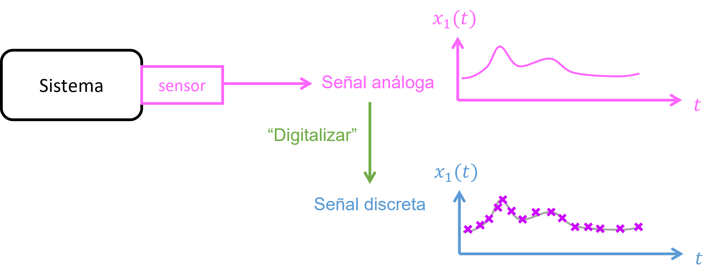
Razón: Queremos realizar calculos de la señal en un computador.
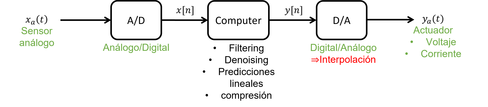
En el contexto de la conversión analógica a digital (ADC, Analog-to-Digital Conversion), la cuantización (quantization) es el proceso mediante el cual se convierte un valor analógico continuo en un valor digital discreto.
Por ejemplo, una máquina 8 bits \(\Longrightarrow \) Números utilizando \(2^{8}\) cifras significativas.
\begin {align*} \text {Bit} = \left \{ \begin {array}{l} 0 \\ 1 \end {array} \right . \Longrightarrow 256 \text { niveles} \end {align*}
Durante la cuantización, cada valor analógico medido se aproxima al nivel más cercano de entre esos 256 niveles.
Por ejemplo, si el rango es \(0 - 5\) V, cada nivel representa un salto de \(\Delta = 5/256 \approx 0.0195\) V. Si el valor analógico real es \(1.23\) V, el ADC lo “cuantiza” al nivel más cercano, por ejemplo \(1.22\) V.
Esta aproximación introduce un error de cuantización, que es la diferencia entre el valor analógico real y el valor
cuantizado. Este error es inevitable y depende de la resolución del ADC: a mayor número de bits, menor error de
cuantización. (Nota: Computadores representan números utilizando dígitos binarios (bits almacenados en
flip-flops).)
Definiendo el rango \(R\) de valores de entrada \(u\) que puede medir el ADC:
\begin {equation} R = |u_{\max } - u_{\min }| \end {equation}
El intervalo de cuantización se define como:
\begin {equation} q = \frac {R}{2^B} \end {equation}
donde \(B\) es el número de bits del ADC. Por ejemplo, si \(u_{\max } = 1g\), \(u_{\min } = -1g\), y \(B = 8\), entonces:
\begin {equation} q = \frac {2g}{2^{8}} = 0.0078125 g \end {equation}
Por lo tanto, el cuantizador en Simulink funciona de la siguiente forma:
\begin {equation} y = q \times \text {round}(u/q) \end {equation}
donde \(y\) es la señal de salida cuantizada, y \(u\) es la señal de entrada.
\begin {align*} x[n]=x_a(nT_s) \end {align*}
donde \(x[n]\) es la señal en tiempo discreto, \(T_s\) es el paso temporal de muestreo, y \(n\) es el índice temporal (número
entero).
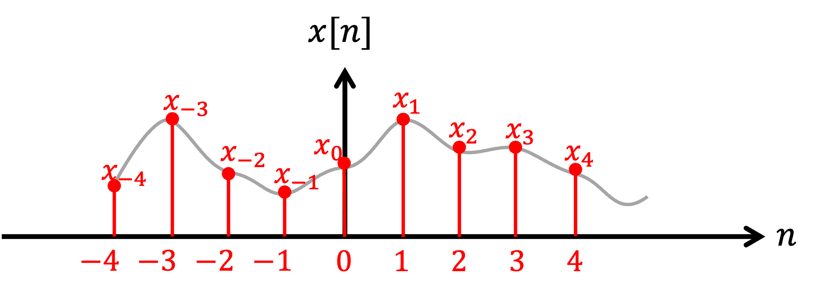
La representación matemática del muestreo se puede realizar utilizando la Función pulso unitario:
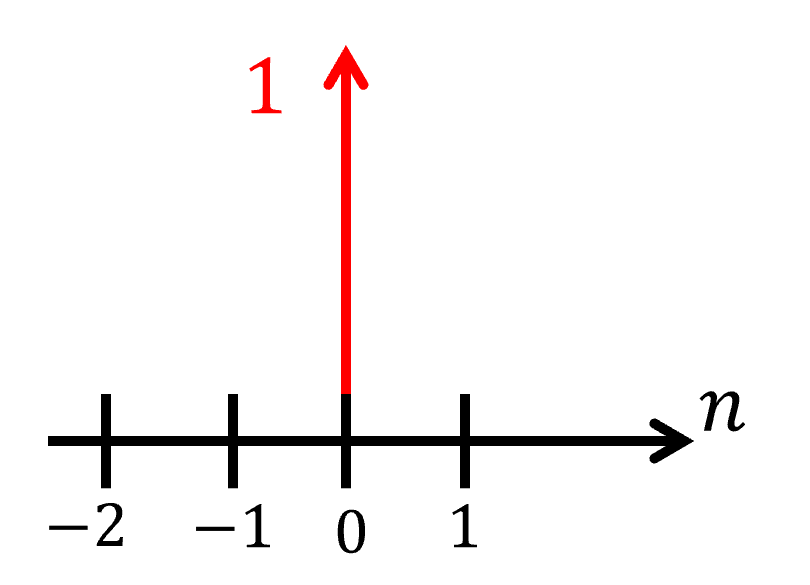
\begin {align*} \delta [n] = \begin {cases} 1, & n=0\\ 0,& n \neq 0 \end {cases} \end {align*}
\begin {align*} x[n]=\sum _{k=0}^{N-1} x_k \delta [n-k]=x_0\delta [n]+x_1\delta [n-1]+x_2\delta [n-2]+...+x_{N-1}\delta [n-(N-1)] \end {align*}
\begin {align*} \{x_n\}_0^{N-1}=\{x_0,x_1,x_2,...,x_{N-1}\} \Longrightarrow \text {Arreglo de N puntos (vector)} \end {align*}
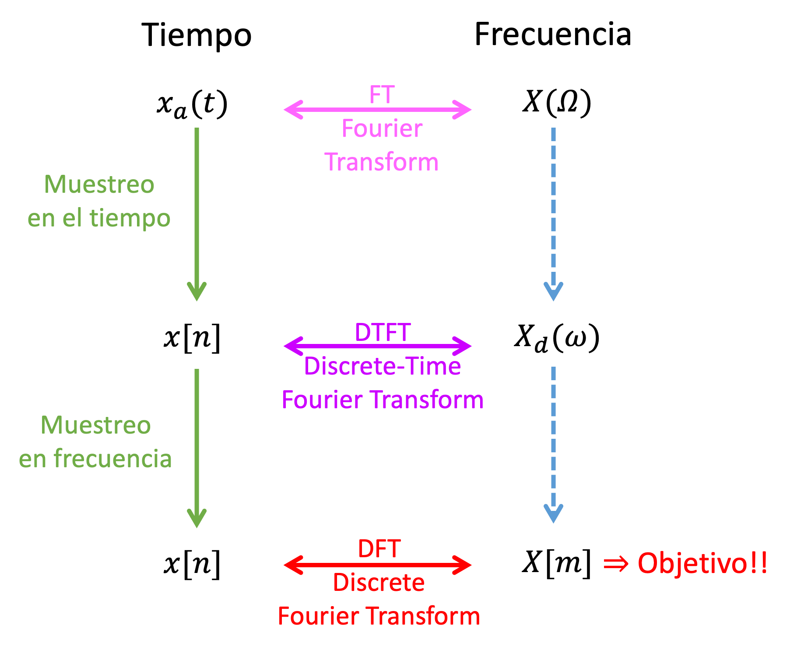
Nota: \(j = \sqrt {-1}\) es el número complejo.
\begin {align*} X(\Omega ) &= \int _{-\infty }^{+\infty }x_a(t)e^{-j\Omega t}dt \quad \text {(CTFT)}\\ x_a(t) &= \frac {1}{2\pi }\int _{-\infty }^{+\infty }X(\Omega )e^{+j\Omega t}d\Omega \quad \text {(inverse CTFT)} \end {align*}
\(t, \Omega \in \mathbb {R}\), \(x_a(t)\in \mathbb {R}\), \(X(\Omega )\in \mathbb {C}\)
Supongamos que la señal \(x(t)\) es discretizada en el tiempo, \(x[n] = x(n T_s)\), donde \(T_s\) es el período de muestreo. Entonces, el DTFT se define:
\begin {align*} X_d(\omega ) &= \sum _{n=-\infty }^{\infty }x[n]e^{-j\omega n} \quad \text {(DTFT)}\\ x[n] &= \frac {1}{2\pi }\int _{-\infty }^{\infty }X_d(\omega )e^{+j\omega n}d\omega \quad \text {(inverse DTFT)} \end {align*}
donde \(\omega \in \mathbb {R}\), \(n \in \mathbb {Z}\).
La DFT opera sobre una secuencia de \(N\) puntos en tiempo, \(x[n], n \in \{0,1,2,\ldots ,N-1\}\), y produce una secuencia de \(N\) puntos en frecuencia, \(X[m], m \in \{0,1,2,\ldots ,N-1\}\).
\begin {align*} X[m] &= \sum _{n=0}^{N-1} x_ne^{-j\frac {2\pi }{N}nm} \quad \text {(DFT)}\\ x[n] &= \frac {1}{N}\sum _{m=0}^{N-1}X_me^{+j\frac {2\pi }{N}nm} \quad \text {(Inverse DFT)} \end {align*}
donde \(n,m \in \{0,1,2,\ldots ,N-1\}\).
Nota 1: Se asume que la secuencia \(x[n]\) es periódica.
Nota 2: Fast Fourier Transform (FFT) es un algoritmo computacional muy eficiente para calcular el DFT.
Revisar Sección A.5 para más información.
\begin {align*} X[m]=X_d(\omega )\bigg |_{\omega =\frac {2\pi }{N}m} \end {align*}
\begin {align*} X_d(\omega ) = \frac {1}{T} \sum _{l=-\infty }^{+\infty } X \left (\underbrace {\frac {\omega + 2\pi l}{T}}_{= \Omega } \right ) \end {align*}
En DSP, queremos muestrear la señal sin pérdida de información (“lossless”). Entonces, hay que elegir correctamente el
intervalo de muestreo \(T_s\) (sampling time).
Teorema 7 (Teorema de Nyquist). La frecuencia de muestreo de una señal digital debe ser al menos el doble de la máxima frecuencia de la señal análoga: \[F_s > 2 f_{\max }\]
Esto quiere decir que la máxima frecuencia de la señal que se quiere medir, \(f_{\max }\), no debe ser mayor que la frecuencia de Nyquist, \(F_N = F_s/2\):
\[ f_{\max } < F_n \]
Aliasing es un fenómeno que ocure cuando el terorema de Nyquist no se cumple, es decir, \(f_{\max } > F_N\). Como consecuencia, la
señal análoga no puede ser reconstruida por la señal digitalizada.
Ejemplo: Video del “helicoptero mágico” https://www.chrisfay.de/helicopter-video.
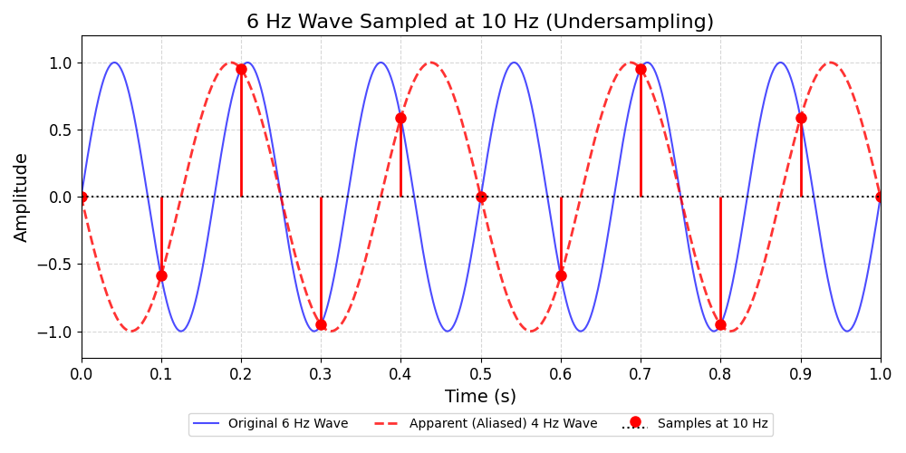
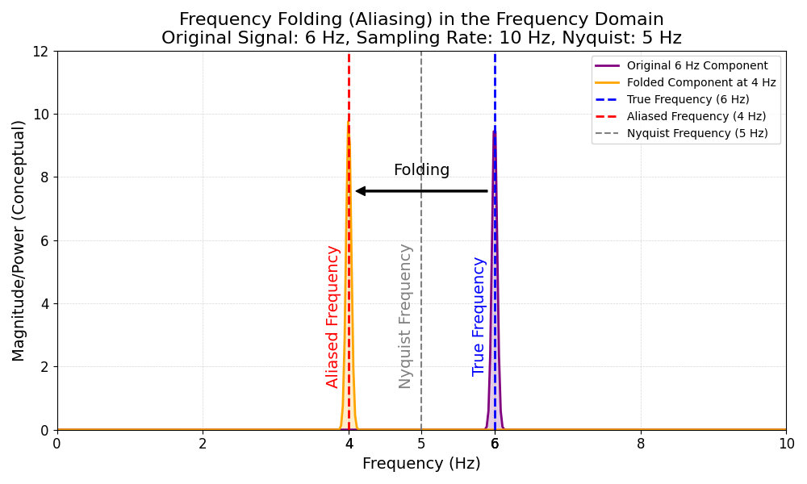
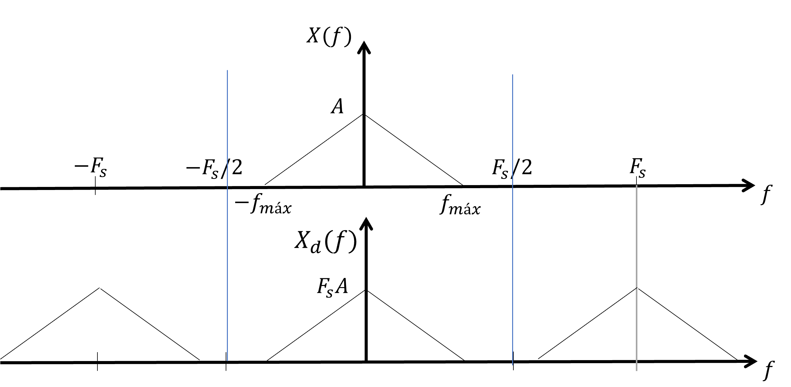
\begin {align*} F_s &> 2f_{max}\\ f_{max} &< \frac {F_s}{2}=F_N \quad \text {(frecuencia de Nyquist)} \end {align*}
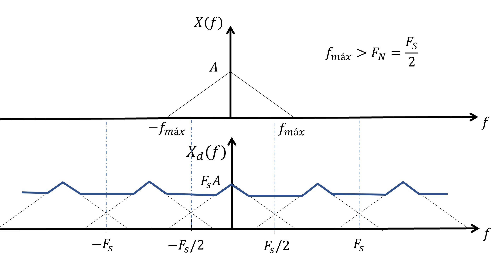
Ejemplo: PSD de respuesta estructural de un sistema 3DOF
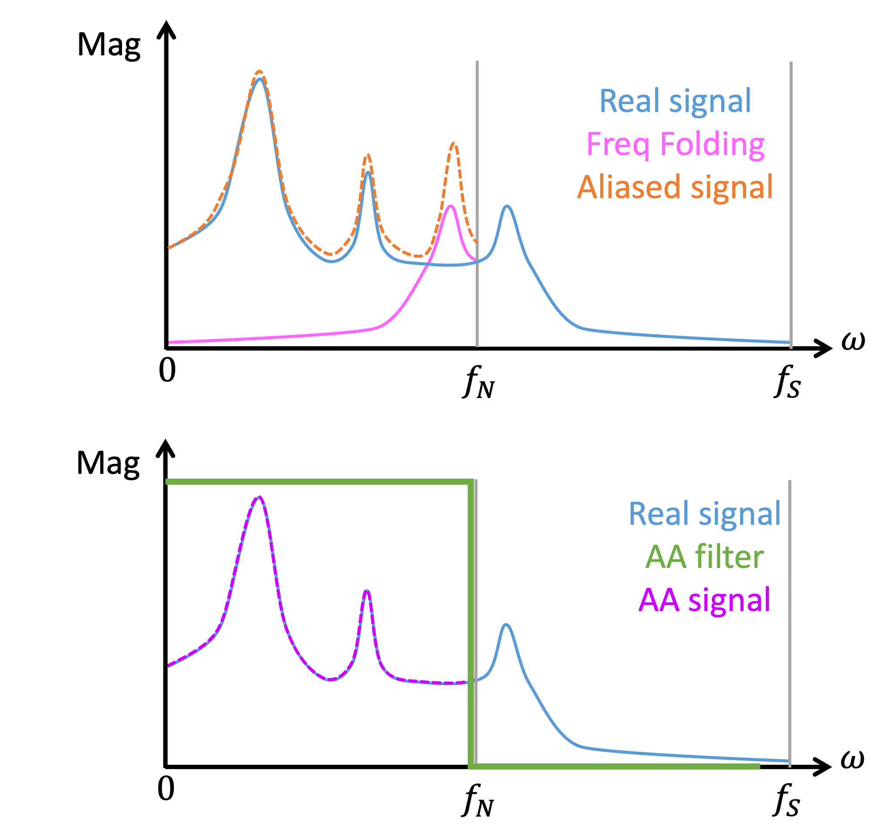
Solución: utilizar filtros anti-aliasing (AA)
Por ejemplo, utilizamos el comando ellip() en Matlab para construir un filtro low-pass de tipo elíptico. El siguiente comando construye un filtro elíptico análogo, de orden 8, bandpass 0.01 dB, bandstop -80 dB, y frecuencia de corte 50 Hz:
1n = 8; % orden del filtro eliptico 2Rp = 0.01; % bandpass (dB) 3Rs = 80; % bandstop (dB) 4fc = 50; % frecuencia corte (Hz) 5wc = 2*pi*fc; % frecuencia corte (rad/s) 6[b, a] = ellip(n, Rp, Rs, wc, "s" ); 7AAfilt = tf(b,a); 8bode(AAfilt)
Los ADC estan constituidos generalmente por tres módulos: (i) filtro anti-aliasing; (ii) sample & hold; y (iii) quantizer. Cada uno de estos módulos se fabrica con componentes y circuitos eléctricos.
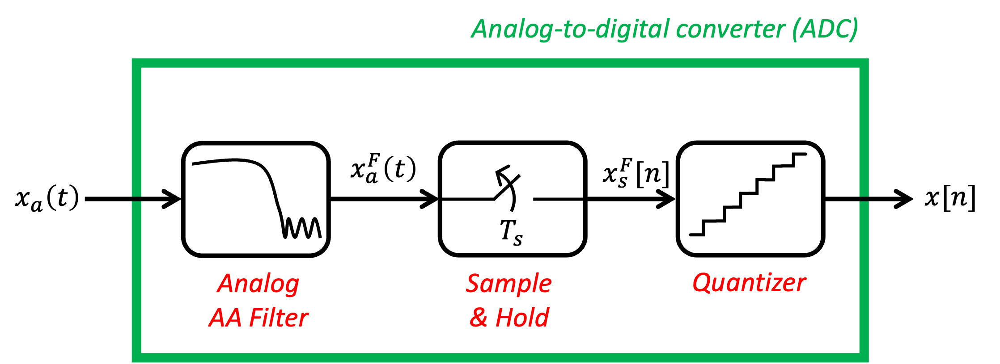
Existen distintas arquitecturas de ADC, dependiendo de la velocidad de muestreo y la resolución. Por ejemplo, arquitecturas \(\Sigma -\Delta \) se ocupa en medición de vibraciones estructurales, por su excelente resolución para bajas frecuencias (\(< 1000\) Hz).
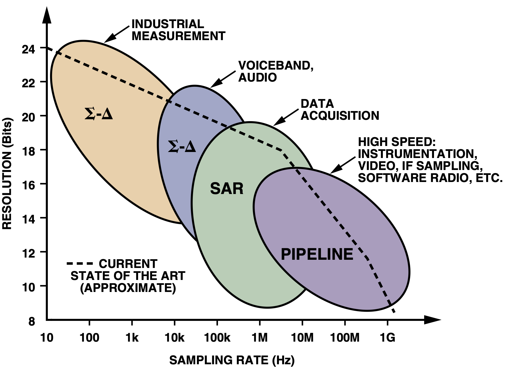
La transformada de Fourier (CTFT o DTFT) asume que la señal es infinita, o al menos es finita pero periódioca. Es decir, que la señal se repite luego de un periodo \(T\) indefinidamente:
\[ x(t) = x(t+kT), \quad \forall k\in \mathbb {Z} \]
Si la señal es finita pero no es periódica, ocurren saltos abruptos.
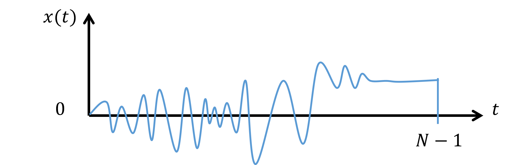
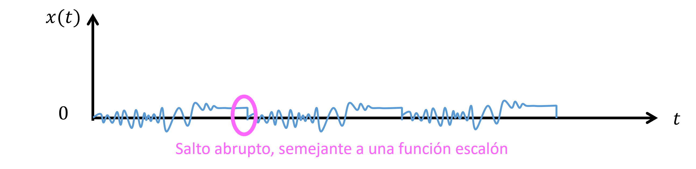
Este salto abrupto es semejante a una función escalón. Recordar que una función escalón se puede escribir como una
Serie de Fourier que es una suma de armónicas con distinta frecuencia. Por lo tanto, al calcular \(X[m]\) (DFT de \(x[n]\))
surge el fenómeno de “spectral leakage”, donde se agregan armónicas artificiales producto del escalón
generado.
Ejemplo:
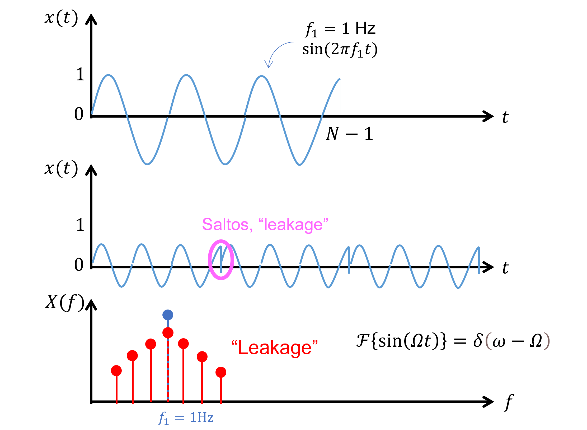
Para resolver el spectral leakage se pueden utilizar Periodogramas con distintos tipos de ventanas.
Referencia: Window Functions in DSP - From Theory to MATLAB (URL: https://youtu.be/vyZrezB2NPo?si=2Z9BbdEGRo-NzyEy).
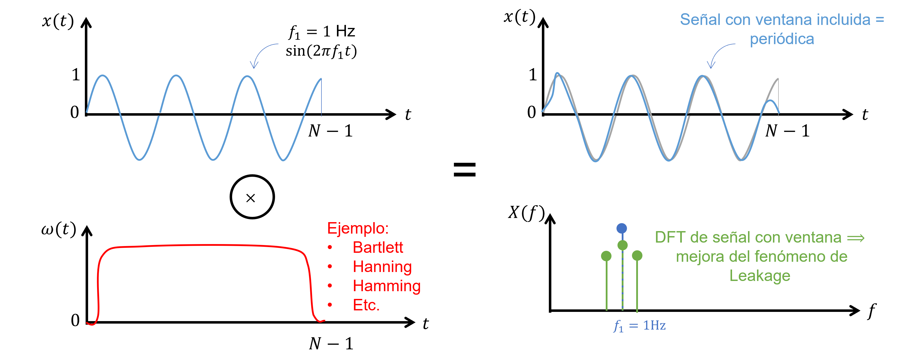
Ventanas más utilizadas:
Referencia: Hayes (1996, Cap. 8).
En el caso de que \(x(t)\) sea un p.e. w.s.s., su PSD se puede calcular de la siguiente forma:
\begin {align*} S_{X}(\Omega ) &= \mathcal {F}\{R_{X}(\tau )\} \quad \text {(Caso contínuo, CTFT)} \end {align*}
En cambio, si \(x[k]\) un p.e. w.s.s., señal digital con un intervalo de muestreo \(T_s\). Podemos estimar \(S_{X}(\omega )\) (continua) utilizando estimadores de valor medio y la definición de DTFT.
\begin {align*} \hat {S}_{X}(\omega ) = \sum _{k=-\infty }^{+\infty }\hat {r}_x[k]e^{-j\omega k} \end {align*}
donde el estimador de autocorrelación \(\hat {r}_{X}[k]\), \(n\) es el índice temporal, y \(k\) es el índice para el retraso.
\begin {align*} \hat {r}_{X}[k] = \frac {1}{N} \sum _{n=0}^{N-1} x[n] x^*[n+k], \qquad k \in \{0,1,2,\ldots ,N-1\} \end {align*}
Alcance para la estimación del PSD:
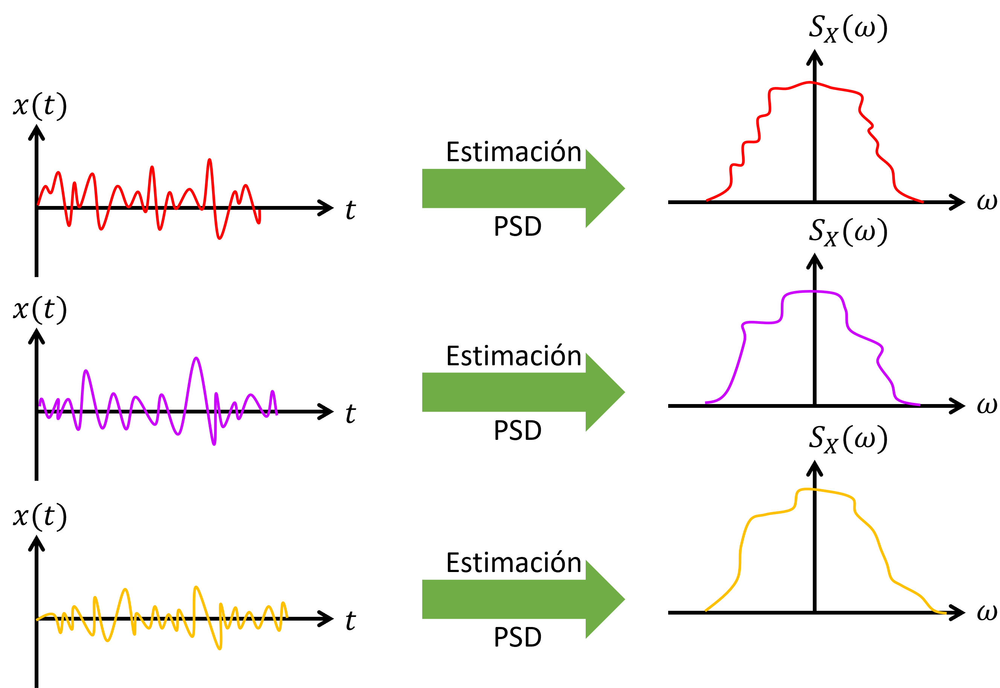
Estrategia para caracterizar el PSD:
Ejemplo: Considere el siguiente p.e.: \begin {align*} x[n]=A+w[n] \end {align*}
donde \(A\) es una constante; \(w[n] = w(nT_s)\) es ruido blanco, \(\mu _W(t) = 0\) y \(\sigma _W^2(t) = \sigma ^2\). Entonces, \(\mu _X(t) = A\) y \(\sigma _X^2(t) = \sigma ^2\).
Dada una realización finita \(\{x[0],x[1]...,x[N-1]\}\). Un estimador razonable para la media \(A\) es la “media muestral de A” (promedio).
\begin {align*} \hat {A} = \frac {1}{N} \sum _{n=0}^{N-1}x[n] \end {align*}
Entonces, queremos dos cosas:
Que \(\hat {A}\) sea insesgado, es decir, que converja al valor correcto de \(A\):
\[\mathbb {E}\{\hat {A}\}=A\]
Si \(\hat {A}\) es sesgado. Que al menos cumpla con ser un estimador asintóticamente insesgado:
\[\lim _{N\to \infty } \mathbb {E}\{\hat {A}\}=A\]
La varianza de \(\hat {A}\) sea pequeña
\[\text {var}\{\hat {A}\} = \frac {\sigma ^2}{N}\]
En este sentido, la dispersión de \(\hat {A}\) disminuye en la medida que \(N\) aumenta:
\[\lim _{N\to \infty } \text {var}\{\hat {A}\} = 0\]
Objetivos: Estimar \(\hat {S}_X(\omega )\) tal que: \[\mathbb {E}\{\hat {S}_X(\omega )\}=S_X(\omega ) \] y \[\text {var}\{\hat {S}_X(\omega )\}=\text {pequeño} \]
Definición:
Usando DTFT:
\begin {align*} \hat {S}_{PER}(\omega ) &= \frac {1}{N} \left | \sum _{n=0}^{N-1} x[n] e^{-j \omega n} \right |^2 \\ & = \frac {1}{N} |X(\omega )|^2\\ & = \frac {1}{N} X(\omega ) X^*(\omega ) \end {align*}
Usando DFT:
\begin {align*} \hat {S}_{PER}[k] &= \frac {1}{N} \left | \sum _{n=0}^{N-1} x[n] e^{-j 2 \pi n k /N} \right |^2 \\ & = \frac {1}{N} \left | X[k] \right |^2\\ & = \frac {1}{N} X[k] X^*[k] \end {align*}
Nota:
\(\hat {S}_{PER}[k]\) es sesgado, pero es asintóticamente insesgado
\begin {align*} \lim _{N\to \infty }\mathbb {E}\{\hat {S}_{PER}[k]\}=S_X[k] \end {align*}
Varianza de \(\hat {S}_{PER}[k]\) no tiende a cero para \(N\to \infty \) \(\Longrightarrow \) Problema
\begin {align*} \text {var}\{\hat {S}_X(\omega )\}=\sigma ^4 \end {align*}
donde \(\sigma ^2=\frac {S_0 \omega _c}{\pi }\) si \(x[n]\) es un ruido blanco.
Principales problemas del periodograma:
Fluctuaciones rápidas
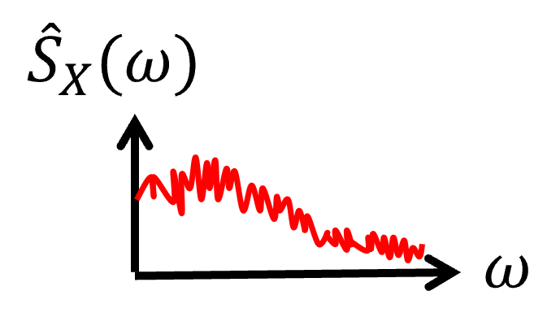
Métodos que modifican el periodograma clásico, para resolver obtener estimadores con menor varianza.
Nota: Periodogramas modificados utilizan ventanas (distintas a rectangular) para mejorar la estimación y reducir el efecto de spectral leakage (¡causado por una ventana rectangular en un principio!).
Uso de ventanas, que reduce el efecto del sesgo, pero sacrificando resolución.
\[\hat {S}_{MP}(\omega )=\frac {1}{N U} \left | \sum _{n=0}^{N-1} x[n]w[n]e^{-j\omega n} \right | ^2 \]
donde \(w[n]\): ventana en el dominio del tiempo y \(U\) es un factor de escala.
\[U=\frac {1}{N}\sum _{n=0}^{N-1} w[n]^2\]
Nota: \(U=1\) si la ventana es rectangular.
Desempeño:
Utiliza el promedio de periodogramas. Dividir la señal de \(N\) puntos en \(K\) bloques de \(L\) muestras cada uno:
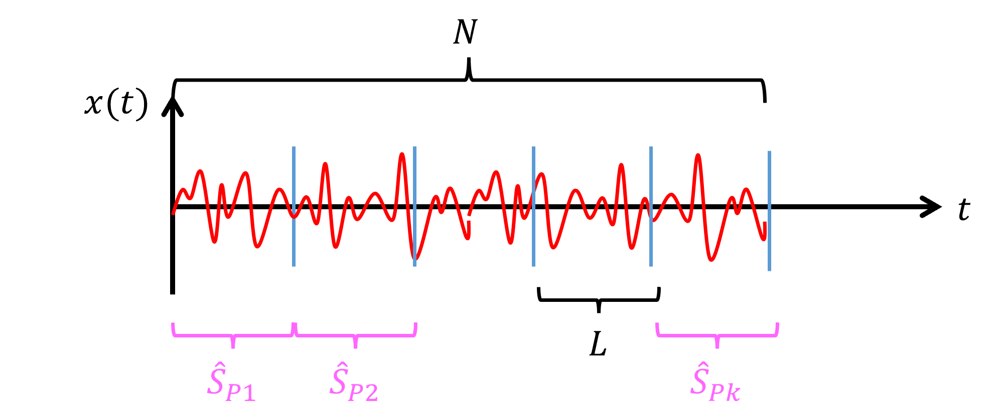
Definición de bloque:
\[ x_i[n] = x[n + iL], \qquad \begin {cases} n &= \{0,1,\ldots ,L-1\} \\ i &= \{0,1,\ldots ,K-1\} \end {cases} \]
La cantidad de bloques resultante se puede calcular con la siguiente formula:
\[K = \text {floor}\left (\frac {N-L}{L}\right ) + 1\]
Entonces, la estimación del PSD es:
\[\hat {S}_B(\omega )=\frac {1}{K}\sum _{i=0}^{K-1} \left \{\frac {1}{L} \left |\sum _{n=0}^{L-1}x_i[n]e^{-j\omega n} \right |^2 \right \} \]
donde \(i\) esta asociado al bloque \(i\) de tamaño \(L\).
La varianza de la estimación del PSD es inversamente proporcional a la cantidad de bloques \(K\):
\[\text {var}\{\hat {S}_B(\omega )\} \propto \frac {1}{K}\]
Es decir, que mientras más bloques se escogan (mayor \(K\)) más nos acercamos al objetivo de que la varianza sea \(0\).
El problema es que como \(N = KL\), si se definen más bloques (aumentar \(K\)), significa que los bloques son más cortos (\(L\) disminuye) y bloques cortos implican una resolución en frecuencia baja, es decir, \(\Delta \omega \) es grande.
\(\Longrightarrow \) “Trade-off”: Varianza vs resolución.
Utiliza el promedio de periodogramas con ventanas traslapadas.
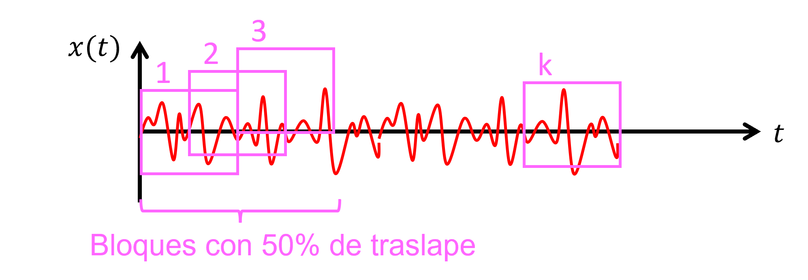
Definición de bloque:
\[ x_i[n] = x[n + i(L-D)], \qquad \begin {cases} n &= \{0,1,\ldots ,L-1\} \\ i &= \{0,1,\ldots ,K-1\} \end {cases} \]
donde la cantidad de puntos de traslape es \(D\):
\[ \begin {cases} D = 0, & \text {sin traslape} \\ D = L/4, & \text {25\% traslape} \\ D = L/2, & \text {50\% traslape (más común)} \end {cases} \]
La cantidad de bloques resultante se puede calcular con la siguiente formula:
\[K = \text {floor}\left (\frac {N-L}{L - D}\right ) + 1\]
Entonces, el estimador de Welch se calcula como:
\[\hat {S}_W (\omega ) =\frac {1}{K}\sum _{i=0}^{K-1} \left \{ \frac {1}{LU}\left | \sum _{n=0}^{L-1} x_i[n]w[n]e^{-j\omega n} \right |^2 \right \}\]
Comparado con método de Bartlett (sin traslape), para el mismo valor de \(N\) y \(L\), el método de Welch con traslape 50% resulta en casi un 50% de reducción en varianza del estimador del PSD:
\[\text {var}\{\hat {S}_W (\omega )\} \approx \frac {9}{16} \text {var}\{\hat {S}_B (\omega )\} \]
En MATLAB, las funciones pwelch() (auto PSD) y cpsd() (cross PSD) ambas utilizan el método de Welch.
1% Muestras de senal digital 2Td = 500; % Duration in seconds 3fs = 20; % Sampling frequency in Hz 4t = 0:1/fs:Td; % Time vector 5N = size(t,1); % Sample size 6 7% Definir bloques, ventanas, traslape y puntos FFT 8L = 1000; % Window size 9noverlap = L/2; % Number of overlapped points 10nfft = 2^nextpow2(L); % Define number of FFT points 11window = hamming(L); % Define window for pwelch (hamming, hann, etc.) 12B = floor((N-L)/(L - noverlap)) + 1; % Cantidad de ventanas con traslape 13fprintf('N = %d, L = %d, noverlap = %d, B = %d, nfft = %d\n',N,L,noverlap,B,nfft) 14 15% Calcular auto PSD de senal u 16[pxx, ~] = cpsd(u, u, window, noverlap, nfft, fs); 17 18% Calcular cross PSD entre senales y & u 19[pyx, f] = cpsd(y, u, window, noverlap, nfft, fs);
Nota: En MATLAB, la función spa() utiliza el método de Blackman-Tukey. Link: https://www.mathworks.com/help/ident/ref/spa.html.